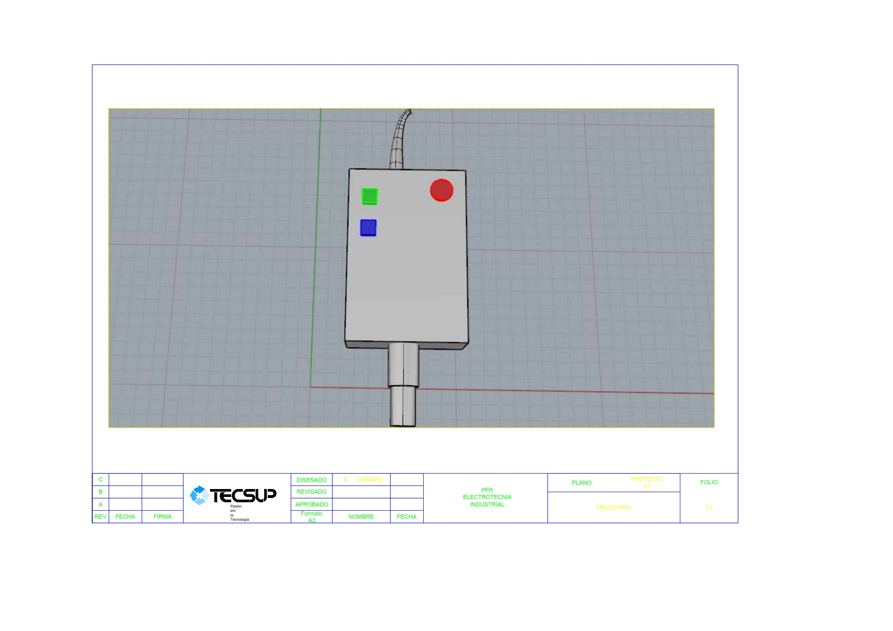

Empatizar
En esta segunda parte de la metodología del Design Thinking abarcaremos el segundo objetivo:
Desarrollar empatía con los usuarios, mediante la observación de los mismos. Por lo tanto, es una metodología basada en observar al usuario.Acercándonos a nuestro cliente, comprendiendo sus necesidades y opiniones para poder recolectar información. Esto, no solo fijamos la información; sino también abarcamos una atención especial para poder acoplarnos a su creatividad e interesantes ideas ya que proporcinaremos un diseño impecable, innovador y una necesidad.
En nuestro caso para poder empatizar nos dimos cuenta que es muy importante tener una información adecuada y valiosa en la que se mostrará en el siguiente video(video de encuesta) :
Visualizacion de maqueta

Visualizacion de prototipo de sensor
CONCLUSIONES DE ENCUESTA